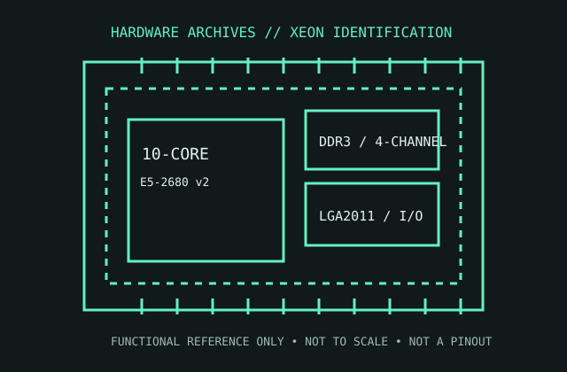

[ WORKSTATION / SERVER // IDENTIFIED COMPONENT ]
Intel Xeon E5-2680 v2
A 10-core Ivy Bridge-EP processor for two-socket-capable server and workstation platforms, the Xeon E5-2680 v2 combines a 2.8 GHz base clock with four-channel DDR3 memory support.

MODEL IDENTIFICATION: Intel Xeon E5-2680 v2, Ivy Bridge-EP, LGA2011. Read the full processor sSpec and stepping from the physical heat spreader; do not confuse it with E5-2680 or the E5-2680 v3, which are different platforms.
Recorded specifications
| Cataloged part | Intel Xeon E5-2680 v2 |
|---|---|
| Era / family | Ivy Bridge-EP Xeon E5 v2, launched 2013; server/workstation processor. |
| Key specifications | 10 cores / 20 threads; 2.80 GHz base, up to 3.60 GHz Turbo Boost; 25 MB Intel Smart Cache; 115 W TDP; LGA2011; four-channel DDR3-800/1066/1333/1600/1866 memory interface. |
| Interface / fit | Requires an LGA2011 server/workstation motherboard with a BIOS supporting this exact v2 model. Platform validates determine single/dual-socket operation and ECC memory support; no integrated graphics. |
| Variants / identification | E5-2680 v2 is distinct from the original E5-2680 (Sandy Bridge-EP), E5-2680 v3 (LGA2011-v3/DDR4), and lower-power E5-2680L v2. Check sSpec and board support list. |
Compatibility and service notes
- Confirm LGA2011 socket generation, chipset, BIOS, heatsink, power delivery, and ECC/unbuffered/registered DIMM requirements in the system-board documentation.
- This model has no integrated GPU; a compatible discrete graphics adapter or management controller is needed for local display.
- Do not infer two-socket support from the processor alone; motherboard design, BIOS, and platform licensing determine multiprocessor configuration.
- Inspect the LGA socket contacts and processor substrate carefully, and use the specified server cooler and mounting procedure.
Service & archival record
Record the full sSpec, batch/date code, tested board model/revision, BIOS, memory channel population, cooler, and measured operating conditions. Preserve the thermal solution and system airflow context; server sustained power and temperature depend on platform configuration.
For any replacement, check the exact server/workstation CPU support list and memory-validation tables, rather than assuming an LGA2011 CPU family is interchangeable.
Sources & further reading
- Intel ARK — Xeon E5-2680 v2 model specificationsIntel’s model-level product record for the E5-2680 v2.
- Intel Xeon E5-1600 v2 / E5-2600 v2 product family datasheetManufacturer platform, package, memory, and electrical documentation for this v2 family.
- Intel Xeon E5 v2 launch history and platform contextIntel product-history material for the Ivy Bridge-EP Xeon E5 v2 generation.
Check the board maker’s system-specific CPU and memory support documentation for the exact chassis, firmware, and DIMM configuration.